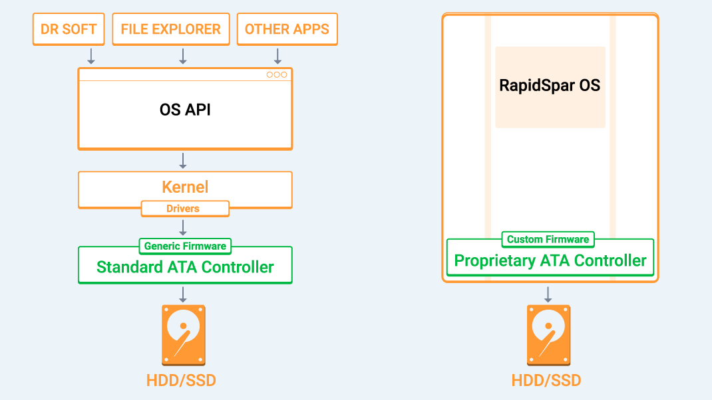

What kinds of cases can RapidSpar solve?
On this page we list the most common hard drive failure symptoms, explain what each symptom usually means, and show how RapidSpar will handle it in comparison with software-only solutions. This is a general outline of what can be expected from RapidSpar. We split the symptoms into three categories:
High Recoverability
RapidSpar will usually be able to automatically recover drives with these symptoms.
Medium Recoverability
Drives with these symptoms will be hit or miss depending on the particular situation.
Low Recoverability
Some of these cases could be recovered with guidance from our support team, but RapidSpar is unlikely to solve them by itself.
High Recoverability
Drive spins up and identifies correctly, but recovering it with software applications works too slowly to be practical.
Software applications do not have the necessary control over the drive to do any kind of read instability handling. As a result, every read command that falls on a bad sector takes 4-20+ seconds to process, during which the drive causes further damage to itself. It’s not a problem if there are a few bad sectors, but if there are a lot then the drive’s condition will be deteriorating faster than the rate of recovery, preventing the case from ever being recovered.
RapidSpar automatically uses reset commands to abort fruitless processing, effectively skipping bad sectors within a second in most cases. This allows the recovery to proceed much faster and the drive to degrade much slower, allowing for more difficult cases to be solved.
Software applications: Waiting indefinitely, hoping the drive responds
If a read command falls on a bad sector, it will be handled by layers of system software (BIOS/OS) that the software application can’t control. The best-case scenario is that the computer waits without crashing until the drive responds to the read command on its own. Every time the read command falls on a bad sector, the drive will spend somewhere from 4 seconds to over 20 seconds making hundreds of failed read attempts, then conclude the sector is bad, write to its firmware area (located on the platters) to update various logs, and finally respond with an error message, at which point the software application can send the next read command. This process wastes time, quickly causes further physical degradation of the drive, and risks firmware corruption.
RapidSpar: Quickly skipping bad sectors with resets
RapidSpar’s proprietary ATA controller can automatically terminate bad sector processing. If a drive does not respond to a read command within a fraction of a second, RapidSpar uses different reset commands to force the drive to stop processing it early. This alone eliminates the large majority of fruitless processing, and in most cases also stops the drive from registering bad sectors in its firmware logs, substantially decreasing the chances of causing further damage. If a serious internal exception causes the drive to stop responding to all commands, as a last resort RapidSpar automatically repowers it to seamlessly continue the recovery process.
Drive spins up and identifies correctly, but accessing it causes a crash/freeze/restart at some point during the recovery process.
Standard computers are designed with overall system stability as the main goal. To operate reliably and predictably, generic hardware and system software (BIOS/OS) work with drives only within the strict confines of the standard ATA protocol. Degraded drives can fail to abide by ATA protocol rules, thereby causing a crash, freeze, reboot, connection drop, or other similar issues in standard computers.
RapidSpar’s hardware, firmware, and software are all specifically built to handle a wide range of different situations and will not crash as a result of unexpected operation from the drive.
Software applications: Indirect access causes big problems
Software data recovery applications do not have direct control of or exclusive access to the drive. They can only send read commands to the OS API; with luck, the communication attempt passes through each layer of system software without any issues, and the drive is capable of consistently processing read commands.
OS STRUCTURE
But if the drive isn’t operating as expected, communication can break down at any point, halting the recovery effort. If the drive is responding with errors, any of the system software layers could have an exception and take the whole system offline. If the drive has an internal exception when processing a bad sector — for example, while updating firmware logs — it may not respond within a reasonable timeframe, which would also cause the computer to freeze, restart, or drop the connection to the drive. To make matters worse, because the software application has no direct connection to the drive, it may not even be aware when the connection has been dropped. In that case, it will keep trying to recover data, but none of its attempts will actually go through, leaving the drive to idle. After 20-30 seconds of idling, modern drives execute self-scans, attempting to seek out and reallocate bad sectors. This state quickly degrades the drive; entering it is one of the worst things that can happen to a degrading drive.
RapidSpar: Exclusive drive access and control
RapidSpar has direct control of and exclusive access to drives. At every step of the recovery process, it uses proprietary software, firmware, and hardware designed specifically to handle degraded drives.
Drive spins up and identifies correctly in the BIOS, but does not identify within Windows or MacOS.
This usually happens due to bad sectors within critical file system metadata. Standard operating systems have no way of dealing with that and will fail to identify drives with this issue.
RapidSpar is designed to handle this situation and will usually be able to load a file tree and go after specific files, despite bad sectors within critical file system metadata.
Software applications: Limited to drives visible by the OS
The standard file system mounting process will automatically begin as soon as a drive is connected to Windows or MacOS. While mounting the drive, the operating system will reach the first unreadable 8 sector block within critical file system metadata, attempt to read it a number of times, and if it’s not successful then it will either give up (MacOS), or restart mounting from the beginning (Windows). Mounting will fail in this manner even if the contents of the unreadable block are not necessary to mount the drive. Standard operating systems do not work with blocks smaller than 8, so even if just 1 sector is bad, the entire 8 sector block it belongs to will be missed and the drive will not be mounted. If the mounting process fails to complete then the drive will remain invisible to the operating system.
But if the drive isn’t operating as expected, communication can break down at any point, halting the recovery effort. If the drive is responding with errors, any of the system software layers could have an exception and take the whole system offline. If the drive has an internal exception when processing a bad sector — for example, while updating firmware logs — it may not respond within a reasonable timeframe, which would also cause the computer to freeze, restart, or drop the connection to the drive. To make matters worse, because the software tool has no direct connection to the drive, it may not be aware when the connection has been dropped. In that case, it will keep trying to recover data, but none of its attempts will actually go through, leaving the drive to idle. After 20-30 seconds of idling, modern drives execute self-scans, attempting to seek out and reallocate bad sectors. This state quickly degrades the drive; entering it is one of the worst things that can happen to a degrading drive.
RapidSpar: Intelligent file system parsing
RapidSpar loads the file system in an entirely different manner. First it will clone as much file system metadata as possible to the healthy target drive, including every good sector within every unreadable block. From there it will work only with the target drive to parse the file system and build a file tree. Occasional bad sectors within file system metadata will not be an issue, provided they do not restrict access to data which is strictly necessary to load the file tree. Some file system elements have multiple copies, which will be located and used automatically in place of elements that have bad sectors. This process allows RapidSpar to successfully load the file tree and recover the files in the majority of such cases. Even if the file tree can’t be loaded due to logical corruption, RapidSpar can still be used to take a full clone of the drive, handling read instability issues and allowing you to run logical recovery scans on the clone afterward.
Bad sectors are leaving too many files corrupted or lost.
Software tools usually read data in large blocks of sectors and do not retry failed blocks sector by sector, which leaves many good sectors unread, corrupting a larger number of files.
RapidSpar uses smaller blocks to read the drive and will retry failed blocks sector by sector, ensuring recovery of every good sector within every bad block, thereby decreasing the level of corruption.
Software applications: Slow and imprecise
Software data recovery applications usually read data in large blocks of sectors (typically 512-4,096). They are designed to work like that due to the combination of the following three limitations: timing overheads imposed by the system architecture which reduce speed of data access by up to 75% at small block sizes; risk of one of the system software layers crashing when processing a read error; and the inability to terminate bad sector processing. Reading in large blocks allows the application to use fewer commands to read the drive, reducing the consequences of these limitations. If the drive fails to read a block, that entire block is usually forgotten — a loss of 512-4,096 sectors. Because a hard drive will fail to read a block if even a single sector within it is bad, thousands of good sectors remain unread, corrupting a larger number of files.
Some Linux-based cloning tools can be configured to use small read block sizes and do multiple drive passes to retry missed blocks one sector at a time. However all the aforementioned limitations are still there, severely restricting these capabilities. Even with Linux, there is no control over how bad sectors are processed, and every failed read attempt takes up at least a few seconds as a result. If just a few sectors are bad, this isn’t an issue. If there are more, reading in small blocks and then retrying them sector by sector will force Linux to spend far too much time processing failed read commands for the recovery process to be practical or safe. Linux-based tools also generally can’t target specific files or folders for recovery, so they must take full partition clones, recovering countless unnecessary sectors, further increasing recovery time and the potential for something to go wrong.
RapidSpar: Faster, with more data
An efficient architecture and the ability to quickly stop bad sector processing has a substantial impact — RapidSpar can often dig into an entire unreadable block one sector at a time before a software application finishes waiting on a single failed read command.
The RapidSpar architecture has very low timing overheads for processing of individual commands, so it can use a much smaller read block size, typically from 128 to 256, without sacrificing speed. Blocks that fail to read can be retried one sector at a time to ensure that all good sectors within each unreadable block are recovered.
RapidSpar understands file systems, allowing targeting critical file system information and then specific files and folders, usually eliminating the need for time-consuming full-drive cloning. As well, RapidSpar identifies exactly which files are corrupted by bad sectors, simplifying recovery validation.
RapidSpar in Action
This animation is a great overview of the concepts we covered up to this point, showing how RapidSpar and software applications recover the same unstable drive. We are assuming the software application was able to correctly identify the drive and that every layer of the architecture involved in communicating with the drive is working flawlessly. In other words, it is a comparison between the absolute best-case scenario for software applications and an average case for RapidSpar. It is slowed down by 3 times to make it easier to understand:
Medium Recoverability
Drive spins up and sounds normal, but is not identified in the BIOS of a standard computer.
This is a very broad symptom that can be caused by almost any issue: general instabilities, firmware failure, electronic failure, and/or mechanical failure. RapidSpar will help if the problem is with general instabilities, or common types of firmware failures. If the drive suffered mechanical or electronic failure then some part swaps will be necessary as a step in the recovery process. Our support team would be happy to help solve electronic issues by guiding a swap of the printed circuit board from a donor drive. If the drive suffered complex firmware failure, it will have to be handled by a professional with strong understanding of firmware design of the relevant drive family.
Software applications: Limited to the most complex drive initialization process
To begin working with drives, standard computers send a large number of initialization commands, such as Set UDMA Transfer Mode, Initialize S.M.A.R.T., Initialize Device, Recalibrate and so on. If a drive is degraded, it may fail to respond to all of these commands within the expected timeframe, which usually leads to a failure to identify the drive. This doesn't mean the drive has actually failed, or even that it has any serious problems — it's just that its degraded firmware subsystem has failed to process one of these initializations commands in the exact way it was expected to.
Furthermore, most of these initialization commands are unnecessary for modern hard drives and only create a potential for problematic behavior. They are a part of the initialization process in standard computers because they are necessary for older drives. Standard computers do not make any distinction between older and newer drives, and instead always use the most complex initialization process to support the largest number of drives, which causes some degraded, but still functional drives to remain unidentified.
RapidSpar: Keeping it simple
RapidSpar uses the lightest initialization procedure in each case, which for most modern drives is a single Disk Identification command. RapidSpar is also built to be forgiving of possible deviations in the drive's response, ensuring that there are no unexpected problems and that only truly failed drives are unidentified.
Drive spins up and identifies correctly. Some data can be read, but the drive makes clicking or grinding noises when reading particular areas.
Drives with this symptom are still readable, but have advanced physical degradation and could easily crash completely at any moment. Due to early termination of bad sector processing, RapidSpar will be able to recover tens of times more data from such a drive before it crashes in comparison with software-only solutions. Whether that will be sufficient depends on the condition of the drive and the amount of data that needs to be recovered.
Low Recoverability
Drive makes clicking noises right after spinning up and does not identify in the BIOS.
Hard drives with this symptom will usually have serious mechanical damage. Such cases will most commonly require a swap of the read/write heads by an experienced professional as a step in the recovery process.
Drive cannot spin up and does not identify in the BIOS.
If the drive does not make any noises at all then most likely the printed circuit board (PCB) had an electronic failure. It could be as straight forward as the short circuit protection (TVS or fuse) being triggered, or it could be a more complex electronic failure, for which the whole PCB will have to be swapped. Our team would be happy to provide guidance for this procedure as a part of technical support.
If the drive makes some unusual noises then that points toward a mechanical failure. For example the read/write heads being physically stuck to the platters, or a total failure of the motor.
Drive is perfectly healthy, but logical corruption or encryption prevents access to files.
RapidSpar primarily helps with problems on the device level, rather than on the logical level. If there is a purely logical issue, such as a virus attack, or an accidental reformat due to user error, then hardware data recovery tools like RapidSpar will be unlikely to offer an advantage over well-designed logical recovery software like R-Studio.

RapidSpar is the latest innovation from DeepSpar, an Ottawa-based firm that has been pioneering data recovery solutions since 2001. Today, DeepSpar equipment is the market standard among dedicated data recovery companies. RapidSpar extends that leadership with a device format designed for IT generalists and non-expert data recovery practitioners.
Learn more about us »Click here to see the pricing and options. For all other inquiries: